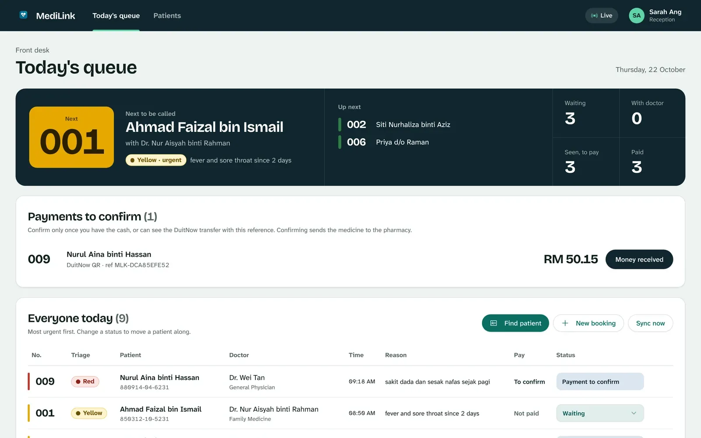
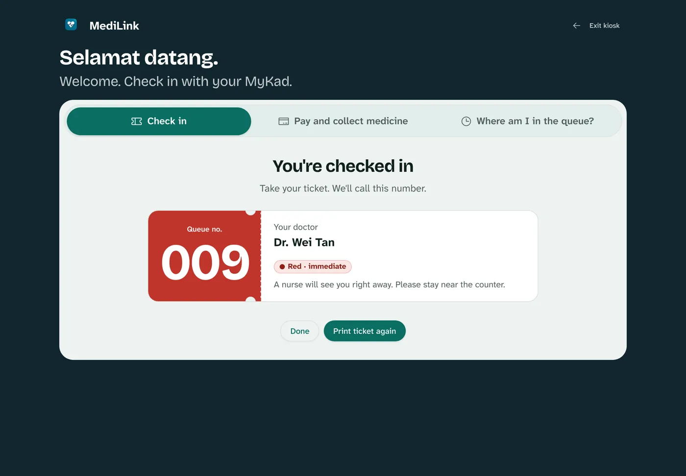
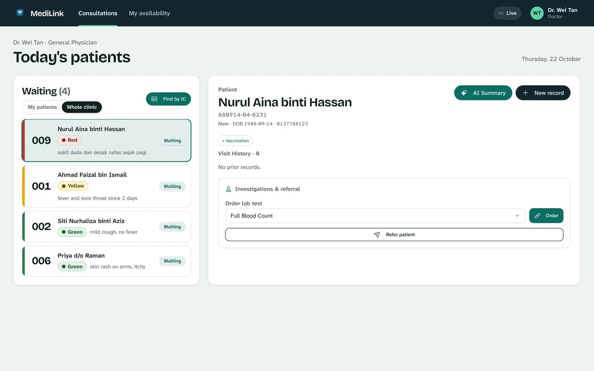
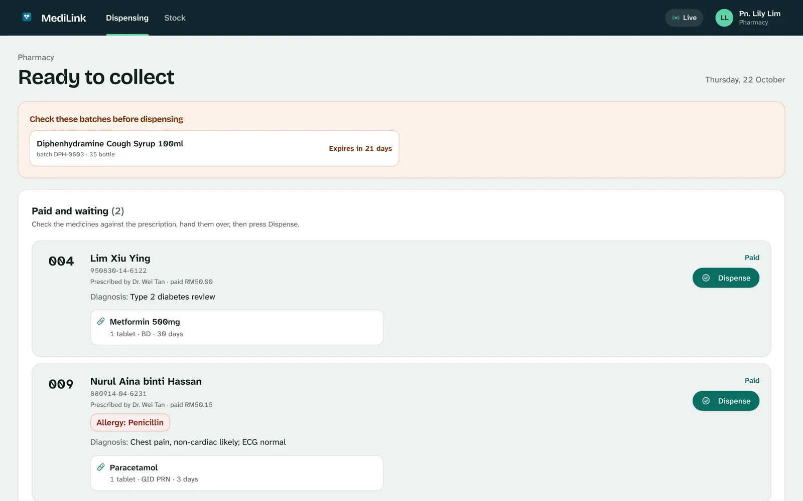
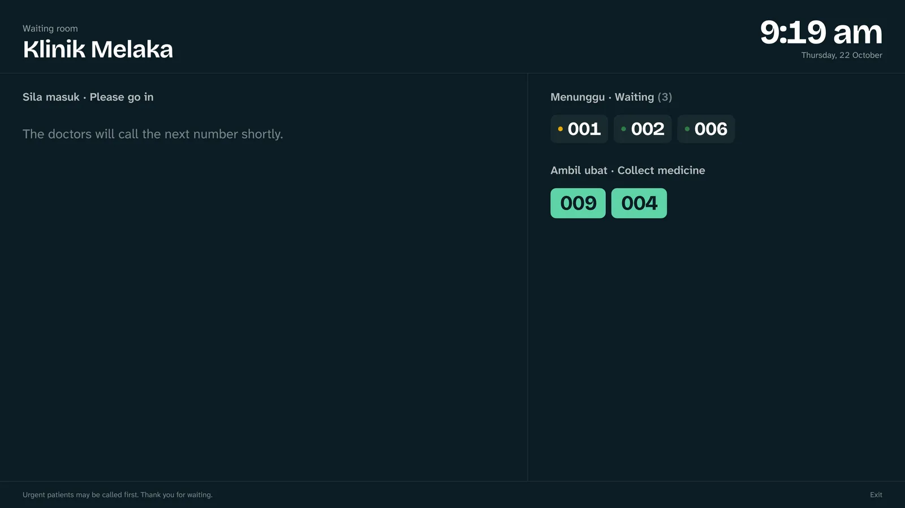
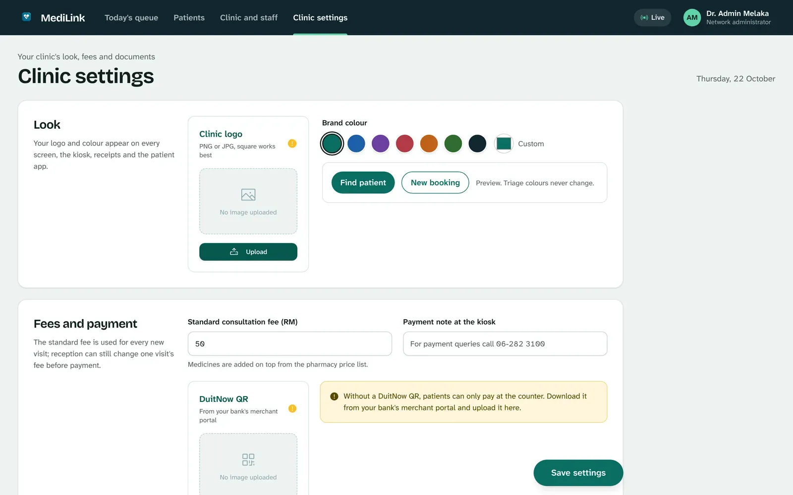
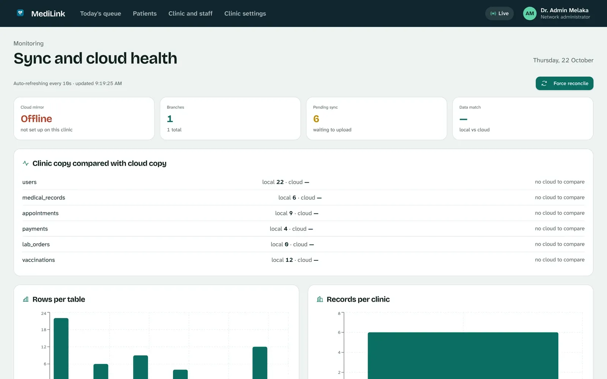

The clinic system that keeps working when the internet doesn't.
Kiosk check-in with MyKad, triage, the doctor's console, pharmacy and DuitNow payment for Malaysian GP clinics. It runs on the clinic's own computer and backs up to the cloud whenever the line is up.
Windows, macOS and Linux · All downloads

One system for the whole visit
From the moment a patient taps their MyKad to the moment they collect their medicine, everyone at the clinic works from the same live queue.
Check-in at the kiosk, in Malay or English
Patients key in or scan their MyKad, say how they feel in their own words, and take a queue number. New patients register in under a minute.
- Suggests a triage colour from the symptoms, including Malay phrases like "sakit dada"
- Urgent patients move to the top of every queue
- Works on any tablet on the clinic's Wi-Fi

The doctor sees who matters most
The doctor's console lists the waiting room by urgency, opens the patient's history and allergies in one click, and writes the record, prescription, MC, lab order or referral from the same screen.
- Prescriptions pick from the clinic's own stock and prices
- MCs, referral letters and lab reports print on the clinic's letterhead
- With the patient's consent, see their history from other MediLink clinics

Pharmacy holds the medicine until it's paid
Patients pay by DuitNow QR at the kiosk or at the counter. Reception confirms the money has arrived, and only then does the prescription appear at the pharmacy, with the patient's allergies shown before anything is handed over.
- Stock levels, low-stock and expiry warnings
- Daily cash report for the front desk
- Receipts with the clinic's name, registration number and footer

A waiting-room screen, included
Put any TV or spare monitor on the clinic's Wi-Fi and open /board. Numbers only, never names, readable from the back row, in Malay and English.

Your clinic's name on every screen
Set your logo, colour, standard consultation fee, DuitNow QR, opening hours and letterhead in one place. Patients see your clinic, not ours.
- Add doctors, reception and pharmacy staff with their own sign-in
- Change the fee for one visit, or for the whole clinic
- Triage colours stay the same whatever colour you choose

Cloud backup that can't mix clinics up
Records are always saved on the clinic's computer first. Connect cloud backup and a copy follows within seconds, or catches up by itself after an outage.
- Each clinic has its own cloud login; the database itself keeps clinics apart
- Identity card numbers are encrypted before they're stored
- Other clinics only see a patient's records with that patient's consent

Download MediLink
One download runs the whole clinic. Install it on the reception computer; every other screen (kiosk, doctor's room, pharmacy, waiting-room TV) opens in a browser on the same Wi-Fi.
Install in five minutes
No server, no IT person. If you can unzip a file, you can set up MediLink.
- Unzip the downloadRight-click MediLink-Windows-x64.zip, choose Extract All, and move the MediLink folder somewhere permanent, such as Documents.
- Open MediLink.exeIf Windows SmartScreen appears, choose More info, then Run anyway. This trial build isn't signed with a Microsoft certificate yet.
- Set up the clinic in your browserA window shows the clinic's address and your browser opens set-up: enter the clinic's name and the first administrator account. Allow access on private networks if Windows asks, so tablets can reach it.
- Add your staff and lookUnder Clinic and staff, add doctors, reception and pharmacy. Under Clinic settings, add your logo, colour, fee and DuitNow QR.
- Open the other screensOn the kiosk tablet, doctor's computer and waiting-room TV, open the "Other devices" address shown in the MediLink window. Add
/kioskfor check-in or/boardfor the TV.
- Unzip the downloadDouble-click the zip and move the MediLink folder into Applications or Documents.
- Open MediLink the first time with right-clickInside the folder, right-click MediLink, choose Open, then Open again. macOS asks once because this trial build isn't notarised by Apple yet. If it still refuses, open System Settings, Privacy & Security, and choose Open Anyway.
- Set up the clinic in your browserA Terminal window shows the clinic's address and your browser opens set-up. Keep that window open while the clinic is working.
- Add your staff and lookUnder Clinic and staff, add doctors, reception and pharmacy. Under Clinic settings, add your logo, colour, fee and DuitNow QR.
- Open the other screensOn other devices on the same Wi-Fi, open the "Other devices" address shown in the window. Add
/kioskfor check-in or/boardfor the TV.
- Unpack it
tar xzf MediLink-Linux-x64.tar.gz - Start MediLink
./MediLink/MediLink, or add--port 8001to choose the port. - Set up the clinic in your browserOpen the address it prints. Clinic data lives in
~/.local/share/medilink. - Open the other screensUse the "Other devices" address on the clinic's network, with
/kioskor/board.
Try it free for a month
Run your real clinic on MediLink for one month, with HarNova on hand to help.
What's included
- The full system: kiosk, triage, doctor console, pharmacy, payments, waiting-room screen and patient app
- Help setting up your staff, fee, letterhead and DuitNow QR
- Cloud backup for the month, with your clinic's own login
- Your records stay on your computer, and stay yours, whether or not you continue
How to start
1. Download and install MediLink on the reception computer.
2. Open Clinic settings, Cloud backup, and copy your Clinic ID.
3. Send the Clinic ID to HarNova. We reply with your cloud key and a time to walk through the set-up with your team.
Questions clinics ask
What happens when the internet goes down?
Nothing changes at the clinic. Check-in, consultations, payment and dispensing all run on the clinic's computer. Changes wait in a queue and upload by themselves when the line returns.
Where are patient records kept?
On the clinic's own computer first, in the MediLink folder described in the install guide. With cloud backup connected, a copy is kept in a database in Asia where each clinic can only ever reach its own records. Identity card numbers are encrypted before they are stored.
Does MediLink decide a patient's triage?
No. It suggests a triage colour from what the patient types, so urgent cases stand out in the queue. The clinic's staff make every clinical decision and can change the order at any time.
How do patients pay?
By scanning your clinic's DuitNow QR at the kiosk or in the patient app, or at the counter. Reception confirms each payment once the money has arrived, and only then is the medicine released.
Which computers and devices do I need?
One computer to run MediLink (Windows, Mac or Linux). Every other screen, such as a kiosk tablet, the doctor's laptop or a waiting-room TV, only needs a web browser on the same Wi-Fi.
What does it cost after the trial?
The trial costs nothing. Before it ends, HarNova agrees pricing with each clinic. If you don't continue, you keep your records.
How do I back up my data?
Turn on cloud backup, and also copy the MediLink data folder (including keys.json) to an external drive regularly. Without keys.json, stored identity card numbers can't be read.